under the hood
That one sentence is the whole design. Everything motiscope does follows from it — and everything it refuses to do follows from it too.
why “AI, copy this animation” doesn’t work
A still frame shows you every shape, every colour and every position. It tells you nothing about time. Duration, easing, the gap between two beats, the period of a loop — none of it survives a screenshot. So a vision model can describe an animation it cannot reproduce, because reproduction needs the one axis a picture doesn’t have.
motiscope does exactly the one thing a model can’t, and refuses to do anything a model does better.
Everything below is in service of that split.
this is why the analysis can afford to be dense
| Artifact | Sampling | Cost |
|---|---|---|
| Motion-energy curve, motion grid, ffmpeg signals | native fps (capped at 60, ≤1200 samples) | zero image tokens — it’s arithmetic |
| Curated keyframes | 8–48 PNGs after dedup | ~300–400 image tokens each |
Frame count tracks motion complexity, not video length. A 10-second clip typically yields about ten frames. The numeric pass can be as dense as physics allows, because it costs nothing to look.
one decode, 32×32 grayscale thumbnails, mean absolute difference
ffmpeg -i <video> -vf "fps=<native>,scale=32:32,format=gray" -f rawvideo -Energy at frame i is the mean absolute difference against frame i−1. No pixels ever reach Python at full size. That series is the source of truth for everything temporal.

A whole-frame average is the wrong statistic. One button sliding across a 1280×720 page moves a rounding error’s worth of pixels; average that over the frame and it reads as nothing happened.
So the frame is split into an 8×8 grid, and the signal is the mean of the
most active 10% of cells — not of all of them. On the ambient loop, straight from
its motion.json:
| Signal | Mean energy |
|---|---|
| Whole-frame average | 1.763 |
| Localized (top-K cells) | 6.998 |
A 4× amplification of exactly the thing you care about. This wasn’t
theoretical: three cards animating on a 1280×720 canvas were being classified as
hold before it existed.
motion_ref = max(percentile_75(energy), 0.05)
threshold = max(0.05, 0.18 × motion_ref)The 75th percentile, not the maximum. A hard cut or a full-screen fade produces
near-maximal energy. Anchor the threshold to the peak and one 0.27-second transition
raises the bar above every real element animation in the clip — which then all report
as hold.
24.5 and the analysis found zero move
segments. With a percentile-anchored reference the threshold fell to 1.55
and the animations appeared.
a second decode, five filters, parsed from stderr
| Filter | What it gives | Note |
|---|---|---|
scdet | hard cuts | ≈0 on single-shot UI animations — expected |
blackdetect + signalstats | fades, brightness ramps | proxy for global opacity |
freezedetect | whole-frame stillness | confirmation only |
siti | spatial / temporal information | → content profile |
freezedetect is deliberately demoted. It measures whole-frame
stillness, so on a large canvas it fires while a small element is mid-animation. It may
confirm a hold the energy curve already found; it may never turn a
move into a hold. Letting it do so was a bug.
you do not need to see the element to measure how it accelerated
Energy is mean pixel change per frame, which is a proxy for speed. Integrate speed and you get displacement. So:
The running integral of the energy curve, normalised, is the segment’s displacement-vs-time curve — which is exactly what a CSS timing function describes.
Normalise it, then match against a library of seven real curves and keep the closest by
RMSE. The output is a genuine cubic-bezier, not a coarse label — usable
directly as CSS cubic-bezier(...), a Framer array, or a GSAP
CustomEase.

tests/test-ease.mp4 is synthesised so that position ∝ t²,
and the integral recovers t² from nothing but frame differences.
The mechanism is sound.rmse 0.047. motiscope recovers the easing class and shape
faithfully. It does not recover the author’s exact control points, and it never
claims to.the only step that costs money
Candidate timestamps are the union of t=0, t=end, every segment
boundary, the energy-curve extrema (keyposes and peaks), and a sparse uniform backbone.
Then each candidate is reduced to a grayscale thumbnail of DEDUP_THUMB = 16
squared, and dropped if it is within a mean-absolute-difference of
DEDUP_THRESHOLD = 2.0 of the frame already kept. What survives is evenly
sampled down to the preset’s budget.
| Preset | Frames | Resolution | For |
|---|---|---|---|
draft | 12 | 512px | quick look, tight budget |
balanced (default) | 32 (usually 8–20 after dedup) | 640px | most cases |
detailed | 48 | 960px | dense sequences, reading on-screen text |
landing | 44 | 1280px | web walkthroughs — each section plus its motion |
For clips of 8 seconds or more with two or more motion beats, the budget
follows the motion instead of the clock. Every move segment is drilled
densely; every hold gets one representative frame. Move segments are
allocated frames in proportion to duration × peak_energy, so a fast,
intense beat earns more frames than a slow one.
autocorrelation, with three guards against wishful thinking
The strongest autocorrelation lag above a minimum period is the candidate loop length.
A loop is only reported if the clip is mostly moving (a static shot with one
periodic blip is not a loop), the peak correlation is at least 0.7, and the
second harmonic also correlates — a one-off burst does not repeat at 2×.
Two caveats stated up front. Energy is speed-based, so back-and-forth motion reports a
period that is half the visual cycle; the caller is told, so recreation can choose
repeat versus yoyo. And a constant-velocity loop — a
uniform rotation — has flat energy and is intentionally not detected. There is no
periodicity in the signal to find.
the restraint is the feature
It does not classify animation types. There is no enum of
fade | slide | scale. The model looks at the frames and names what it sees —
a mask reveal, a path draw, a morph, a 3D flip, a text split, particles, a clip-path wipe.
Any hand-coded taxonomy would be a ceiling on what can be recreated.
Two features were built and then removed for exactly that reason:
the distinction is load-bearing — trust the first column
| Measured (reliable) | Estimated (from frames) | Not recoverable |
|---|---|---|
| duration, fps, canvas size | which elements move | exact bezier control points |
| segment / beat boundaries | transform magnitudes (px, scale, deg) | sub-pixel & sub-frame motion |
| easing shape + fitted bezier | colours under compression | true 3D and z-order |
| stagger interval | overshoot amount | spring stiffness |
| loop period | spring vs bezier | authored Lottie vector data |
One known artifact: a very gentle ease-in can read as a short leading hold, because sub-pixel motion is invisible in a 32×32 thumbnail. The dominant easing is still recovered — check the first frames.
the repo ships clips whose ground truth is known by construction
bash tests/make_test_clip.sh
python3 -m unittest tests.test_analyze_motion tests.test_integrations| Clip | Authored as | motiscope reports |
|---|---|---|
test-ease.mp4 | position ∝ t² | move · ease-in · cubic-bezier(0.42, 0, 1, 1) |
test-linear.mp4 | constant velocity | move · linear |
test-fade.mp4 | alpha ramp, then still | fade-in, then hold |
test-hold.mp4 | move, then freeze | move, then hold |
test-loop.mp4 | looping overshoot | loop detected · back.out · cubic-bezier(0.34, 1.56, 0.64, 1) |